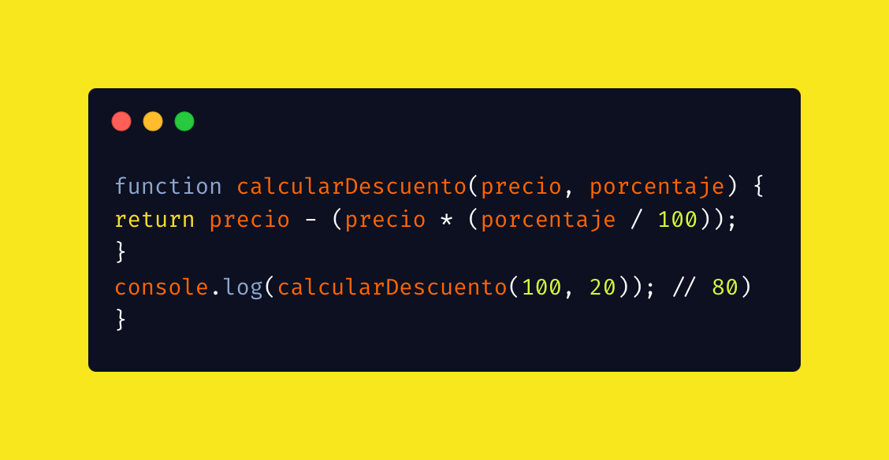

Funciones en JavaScript
Las funciones son bloques de código reutilizables que permiten ejecutar una serie de instrucciones cuando son invocadas. En JavaScript, existen diferentes tipos de funciones como las declaradas, expresadas y las funciones flecha.
Función declarada
Son funciones definidas con la palabra clave function y pueden ser llamadas en cualquier parte del código debido a que son hoisted (elevadas).

function saludar(nombre) {
return 'Hola ' + nombre;
}
console.log(saludar('Ana'));Función expresada y función flecha
Función expresada: Se asigna a una variable y solo puede ser utilizada después de su declaración.
Función flecha: Forma más corta de escribir funciones, introducida en ES6.
// Función expresada
const suma = function(a, b) {
return a + b;
};
// Arrow function
const resta = (a, b) => a - b;